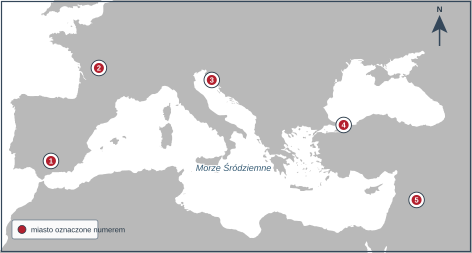
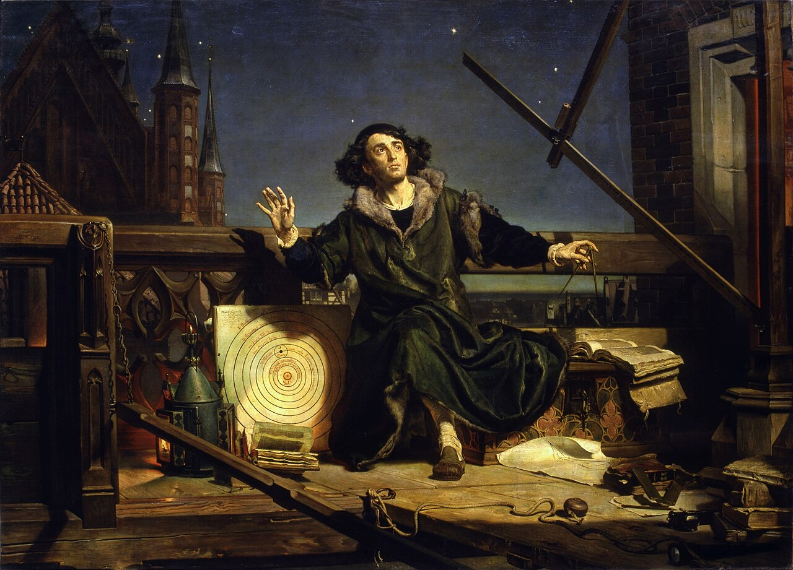

KOD UCZNIA:
Materiał autorski do ćwiczeń, opracowany na podstawie regulaminu szczegółowego oraz archiwalnych arkuszy etapu szkolnego Kujawsko-Pomorskiego Kuratora Oświaty z lat 2018/2019–2025/2026. Nie jest oficjalnym arkuszem konkursowym.
Uzupełnij tabelę. W puste pola wpisz brakujące informacje.
| Cywilizacja | Rzeka lub rzeki, nad którymi się rozwinęła | Pismo lub święta księga |
|---|---|---|
| Mezopotamia | 1. | 2. |
| Egipt | 3. | 4. |
| Indie | 5. | pismo indyjskie |
| Chiny | 6. | pismo obrazkowe |
| Izrael | Jordan | 7. |
W każdym pytaniu poprawna jest tylko jedna odpowiedź. Zaznacz właściwą literę.
| 1. Ustrój, w którym o sprawach polis decydowało zgromadzenie wszystkich obywateli, to: A. oligarchia B. demokracja bezpośrednia C. monarchia D. tyrania | |
| 2. Polis słynąca z surowego wychowania wojskowego to: A. Ateny B. Korynt C. Sparta D. Teby | |
| 3. Igrzyska w Olimpii organizowano ku czci boga: A. Apollina B. Posejdona C. Hadesa D. Zeusa | |
| 4. Bitwa z 490 r. p.n.e., w której Ateńczycy pokonali Persów, to bitwa pod: A. Termopilami B. Maratonem C. Salaminą D. Cheroneą |
Dopisz pojęcie pasujące do opisu.
| 1. Najwyższy urząd w republice rzymskiej, sprawowany przez dwie osoby wybierane na rok. | |
| 2. Urzędnik broniący interesów plebejuszy, który mógł zgłosić sprzeciw wobec decyzji innych urzędników. | |
| 3. Urzędnik powoływany na pół roku w chwili zagrożenia państwa, dysponujący władzą nieograniczoną. | |
| 4. Uboższa grupa obywateli rzymskich, która przez wieki walczyła o równouprawnienie z patrycjuszami. |
Oceń prawdziwość zdań. Wpisz P albo F.
| 1. Judaizm był religią monoteistyczną, czyli opartą na wierze w jednego Boga. | |
| 2. Edykt mediolański, wydany przez Konstantyna Wielkiego, zapewnił chrześcijanom swobodę wyznania. | |
| 3. Chrześcijaństwo stało się religią panującą w cesarstwie rzymskim już w I wieku n.e. |
Na mapie oznaczono pięć miejsc. Do każdego opisu dopisz właściwy numer 1–5.

Mapa bazowa: TheDastanMR, Wikimedia Commons, CC0 1.0; oznaczenia i opracowanie zadania: własne.
| A. Stolica kalifatu w muzułmańskiej Hiszpanii, znany ośrodek nauki i kultury. | |
| B. Miejsce bitwy z 732 r., w której Frankowie pod wodzą Karola Młota zatrzymali ekspansję arabską. | |
| C. Republika kupiecka, której flota przewiozła uczestników IV wyprawy krzyżowej. | |
| D. Stolica cesarstwa bizantyjskiego, zdobyta i splądrowana przez krzyżowców w 1204 r. | |
| E. Cel I wyprawy krzyżowej, zdobyty przez krzyżowców w 1099 r. |
F. Podaj wiek, w którym wyruszyła I wyprawa krzyżowa.
Dopasuj postać do opisu. Wpisz litery A–F. Jedna odpowiedź jest zbędna.
| 1. Cesarz, który w 1077 r. w Canossie ukorzył się przed papieżem. | |
| 2. Król Franków koronowany na cesarza w 800 r. | |
| 3. Papież, który na synodzie w Clermont wezwał do wyprawy do Ziemi Świętej. | |
| 4. Papież, który zakazał świeckim nadawania godności kościelnych, co wywołało spór o inwestyturę. | |
| 5. Cesarz bizantyjski, na którego polecenie zebrano i uporządkowano prawo rzymskie. |
Dopisz pojęcie pasujące do opisu.
| 1. Prawo miejskie wzorowane na rozwiązaniach niemieckiego Magdeburga, na którym lokowano miasta. | |
| 2. Danina w wysokości jednej dziesiątej plonów oddawana Kościołowi. | |
| 3. Zakony utrzymujące się z jałmużny i głoszące kazania, na przykład franciszkanie i dominikanie. | |
| 4. Wędrówka podejmowana w celach religijnych do miejsca świętego, np. do Santiago de Compostela. |
Uzupełnij tekst. W każdym nawiasie podkreśl lub zapisz jedną poprawną odpowiedź.
Pierwszym historycznym władcą Polski był (1. Mieszko I / Bolesław Chrobry). W 966 r. przyjął chrzest, a jego żoną była czeska księżniczka (2. Dobrawa / Rycheza). W 972 r. pokonał wojska margrabiego Hodona w bitwie pod (3. Cedynią / Legnicą). Jego syn koronował się na króla w (4. 1025 / 1076) r., na krótko przed swoją śmiercią. Po okresie kryzysu państwo odbudował (5. Kazimierz Odnowiciel / Władysław Herman), a jego główną siedzibą stał się (6. Kraków / Poznań). Testament z 1138 r., dzielący kraj między synów, ogłosił (7. Bolesław Krzywousty / Bolesław Śmiały), co rozpoczęło okres (8. rozbicia dzielnicowego / wojen z Krzyżakami).
Uporządkuj wydarzenia chronologicznie. Wpisz cyfry od 1 (najwcześniejsze) do 6 (najpóźniejsze).
| A. Sprowadzenie Krzyżaków do Polski przez Konrada Mazowieckiego. | |
| B. Bitwa pod Legnicą stoczona z Mongołami. | |
| C. Ogłoszenie testamentu Bolesława Krzywoustego. | |
| D. Koronacja Władysława Łokietka na króla Polski. | |
| E. Zawarcie pokoju w Kaliszu z Krzyżakami. | |
| F. Zajęcie Pomorza Gdańskiego przez Krzyżaków. |
Oceń prawdziwość zdań. Wpisz P albo F.
| 1. Kazimierz Wielki ufundował w 1364 r. uniwersytet w Krakowie. | |
| 2. Za panowania Kazimierza Wielkiego Polska odzyskała Pomorze Gdańskie. | |
| 3. Kazimierz Wielki przyłączył do Polski Ruś Halicką. | |
| 4. Statuty wiślicko-piotrkowskie ujednoliciły prawo obowiązujące w państwie. | |
| 5. Po śmierci Kazimierza Wielkiego tron objął jego siostrzeniec Ludwik Węgierski. | |
| 6. Przywilej koszycki z 1374 r. rozszerzył uprawnienia mieszczan. |
Rozwiąż krzyżówkę, a następnie wyjaśnij znaczenie hasła z zaznaczonej kolumny.
| 1. Szybki statek żaglowy używany przez portugalskich i hiszpańskich odkrywców. |
| 2. Wielki zbiornik wodny, Atlantycki, przez który w 1492 r. płynął Krzysztof Kolumb. |
| 3. Portugalski żeglarz, który rozpoczął pierwszą wyprawę dookoła świata. |
| 4. Państwo na Półwyspie Iberyjskim, z którego wyruszył Vasco da Gama. |
| 5. Lud Ameryki Środkowej podbity przez Hernána Cortésa. |
| 6. Kruszec, obok złota masowo wywożony z Ameryki do Europy. |
| 1. | ||||||||||
| 2. | ||||||||||
| 3. | ||||||||||
| 4. | ||||||||||
| 5. | ||||||||||
| 6. |
Hasło:
Wyjaśnij, czym było hasło i jakie miało znaczenie dla dalekomorskich wypraw. (1 p.)
Oceń, czy podane zjawisko było przyczyną (P), czy skutkiem (S) reformacji.
| 1. Sprzedaż odpustów i nadużycia w Kościele. | |
| 2. Powstanie kościołów protestanckich: luterańskiego i kalwińskiego. | |
| 3. Zwołanie soboru trydenckiego i reforma Kościoła katolickiego. | |
| 4. Upowszechnienie druku, które ułatwiło szybkie rozpowszechnianie pism. | |
| 5. Wojny religijne w Rzeszy, zakończone pokojem augsburskim. |

Jan Matejko, „Astronom Kopernik, czyli rozmowa z Bogiem”, 1873 r., Collegium Novum Uniwersytetu Jagiellońskiego. Reprodukcja: Wikimedia Commons, domena publiczna.
1. Podaj imię i nazwisko uczonego przedstawionego na obrazie.
2. Podaj tytuł jego dzieła, w którym ogłosił swoją teorię.
3. Wyjaśnij krótko, na czym polegała teoria heliocentryczna.
4. Podaj imię i nazwisko malarza, który namalował ten obraz.
5. Podaj rok wydania dzieła wymienionego w pytaniu 2.
„1. Iż za żywota naszego my i potomkowie nasi [...] nie mamy mianować ani obierać jakiego [...] króla [...], a to dlatego, aby zawdy wiecznymi czasy po zejściu naszym [...] wolne obieranie zostało wszem stanom koronnym [...].
4. O wojnie albo ruszeniu pospolitym nic zaczynać nie mamy [bez pozwolenia sejmu] [...].
9. Sejm walny [...] we dwie lecie najdalej być ma składan [...].
21. A jeślibyśmy [...] co przeciw prawom, wolnościom, artykułom [...] wykroczyli albo czego nie wypełnili, tedy obywatele koronni obojga narodu od posłuszeństwa i wiary nam powinnej wolne czyniemy [...]”.
Dokument z 1573 r. Cyt. za: Wiek XVI–XVIII w źródłach, oprac. M. Sobańska-Bondaruk, S.B. Lenard, Warszawa 1999, s. 108–110 (pisownia uwspółcześniona, skróty zaznaczono). Objaśnienia: zawdy – zawsze, we dwie lecie – co dwa lata, składan – zwoływany.
1. Podaj nazwę dokumentu (1 p.) i rok jego uchwalenia (1 p.).
2. Jaką zasadę wyboru władcy gwarantuje punkt 1? (1 p.)
3. Kto – zgodnie z punktem 4 – decydował o rozpoczęciu wojny? (1 p.)
4. Co, zgodnie z punktem 9, miało się odbywać co dwa lata? (1 p.)
5. Jakie prawo przysługiwało szlachcie na mocy punktu 21? (1 p.)
Dopasuj układ do jego postanowień. Wpisz litery A–G. Jedna odpowiedź jest zbędna.
| 1. Jan Kazimierz zrzekł się pretensji do tronu szwedzkiego, co zakończyło potop. | |
| 2. Rzeczpospolita oddała Rosji Smoleńsk, Kijów i ziemie na lewym brzegu Dniepru. | |
| 3. Kozacy Bohdana Chmielnickiego uznali zwierzchnictwo cara. | |
| 4. Rzeczpospolita utraciła Podole z Kamieńcem Podolskim i zobowiązała się do haraczu. | |
| 5. Rzeczpospolita odzyskała Podole wraz z Kamieńcem Podolskim. | |
| 6. Rozejm z Moskwą zawarty po wyprawie królewicza Władysława, korzystny dla Rzeczypospolitej. |
1. Podaj rok ogłoszenia Deklaracji niepodległości Stanów Zjednoczonych.
2. Podaj imię i nazwisko pierwszego prezydenta Stanów Zjednoczonych.
3. Wymień dwóch Polaków, którzy walczyli o niepodległość Stanów Zjednoczonych. (2 p.)
1. Podaj dzień, miesiąc i rok zdobycia Bastylii.
2. Podaj nazwę dokumentu ogłoszonego w sierpniu 1789 r., który głosił wolność i równość wobec prawa.
3. Podaj trzyczłonowe hasło rewolucji francuskiej.
Oceń prawdziwość zdań. Wpisz P albo F.
| 1. Sejm Wielki obradował w latach 1788–1792. | |
| 2. Marszałkiem Sejmu Wielkiego ze strony koronnej był Stanisław Małachowski. | |
| 3. Sejm Wielki uchwalił powiększenie armii do 100 tysięcy żołnierzy. | |
| 4. Konstytucja 3 maja utrzymała wolną elekcję. | |
| 5. Konstytucja 3 maja zniosła liberum veto. | |
| 6. Konstytucja 3 maja wprowadziła trójpodział władzy. |
Dopasuj datę roczną do wydarzenia. Każdej daty użyj tylko raz.
Daty: 1772 • 1792 • 1793 • 1794 • 1795
| 1. I rozbiór Polski. | |
| 2. Zawiązanie konfederacji targowickiej. | |
| 3. II rozbiór Polski. | |
| 4. Przysięga Tadeusza Kościuszki na rynku w Krakowie. | |
| 5. III rozbiór Polski. |
Jeżeli test jest przeprowadzany w warunkach konkursowych, odpowiedzi można przenieść na tę kartę.
| Zadanie | Odpowiedzi |
|---|---|
| I | 1.__________ 2.__________ 3.__________ 4.__________ 5.__________ 6.__________ 7.__________ |
| II | 1.__ 2.__ 3.__ 4.__ |
| III | 1.____________ 2.____________ 3.____________ 4.____________ |
| IV | 1.__ 2.__ 3.__ |
| V | A.__ B.__ C.__ D.__ E.__ F.________ |
| VI | 1.__ 2.__ 3.__ 4.__ 5.__ |
| VII | 1.____________ 2.____________ 3.____________ 4.____________ |
| VIII | 1._______ 2._______ 3._______ 4._______ 5._______ 6._______ 7._______ 8._______ |
| IX | A.__ B.__ C.__ D.__ E.__ F.__ |
| X | 1.__ 2.__ 3.__ 4.__ 5.__ 6.__ |
| XI | 1._______ 2._______ 3._______ 4._______ 5._______ 6._______ hasło: _______ |
| XII | 1.__ 2.__ 3.__ 4.__ 5.__ |
| XIII | 1.____________ 2.____________ 4.____________ 5.______ (odpowiedź na pytanie 3. zapisz w arkuszu) |
| XIV | odpowiedzi zapisz w arkuszu |
| XV | 1.__ 2.__ 3.__ 4.__ 5.__ 6.__ |
| XVI | 1._______ 2.____________ 3.____________________ |
| XVII | 1.____________ 2.____________________ 3.____________________ |
| XVIII | 1.__ 2.__ 3.__ 4.__ 5.__ 6.__ |
| XIX | 1._____ 2._____ 3._____ 4._____ 5._____ |
Wynik: / 100 p.